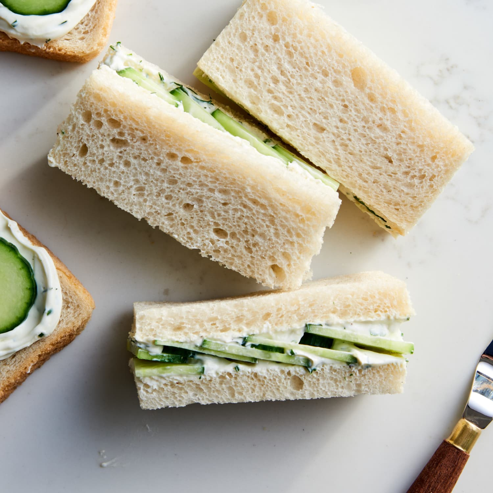

Cucumber Sandwich

Refreshing cucumber sandwiches for any occasion!
One of my favorite foods that can be eaten as a meal with a side or as a
standalone snack.
Ingredients:
- Cucumbers sliced
- Your favorite bread (Mine is sourdough)
- Mayonnaise or Dijon Mustard
Steps:
- Spread mayonnaise or mustard on each slice of bread. If you're using
mustard, make sure to not add too much as the flavor can be overpowering
- Carefully stack desired amount of cucumbers onto the bread.
- Close sandwich and enjoy!